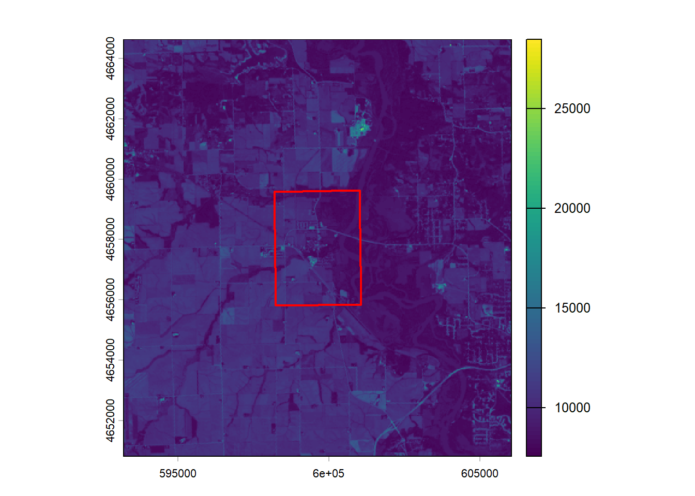
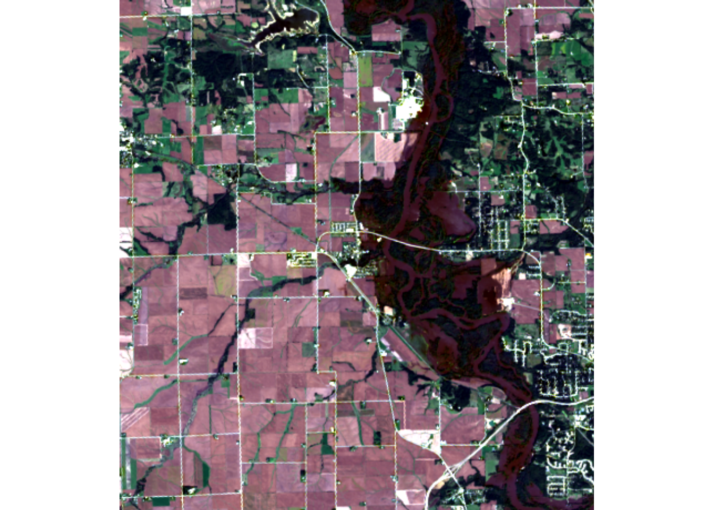
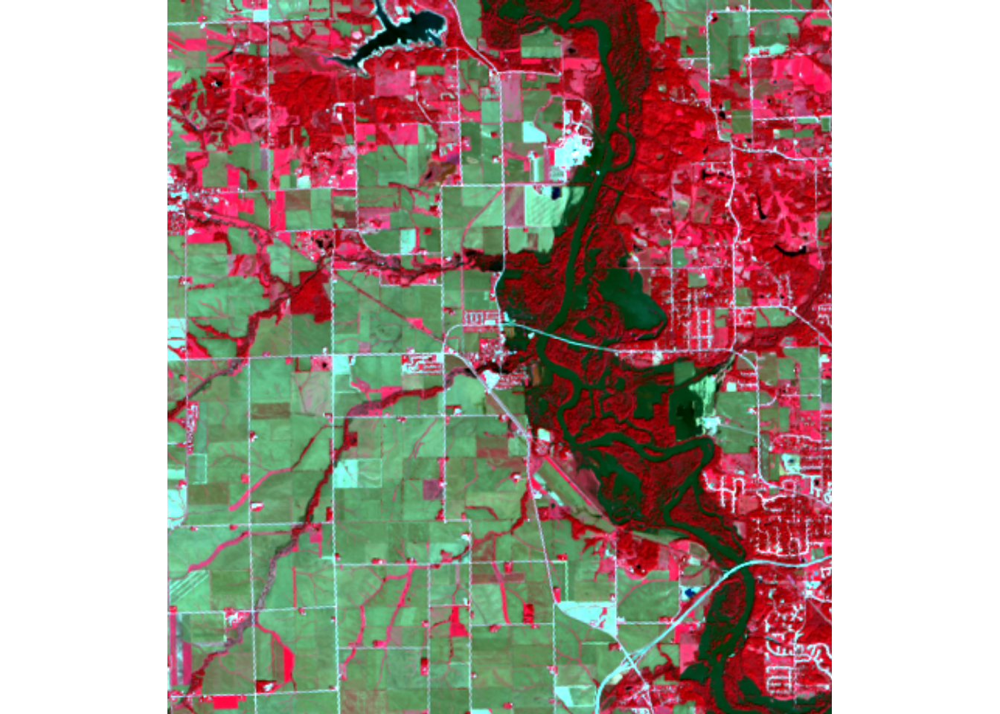
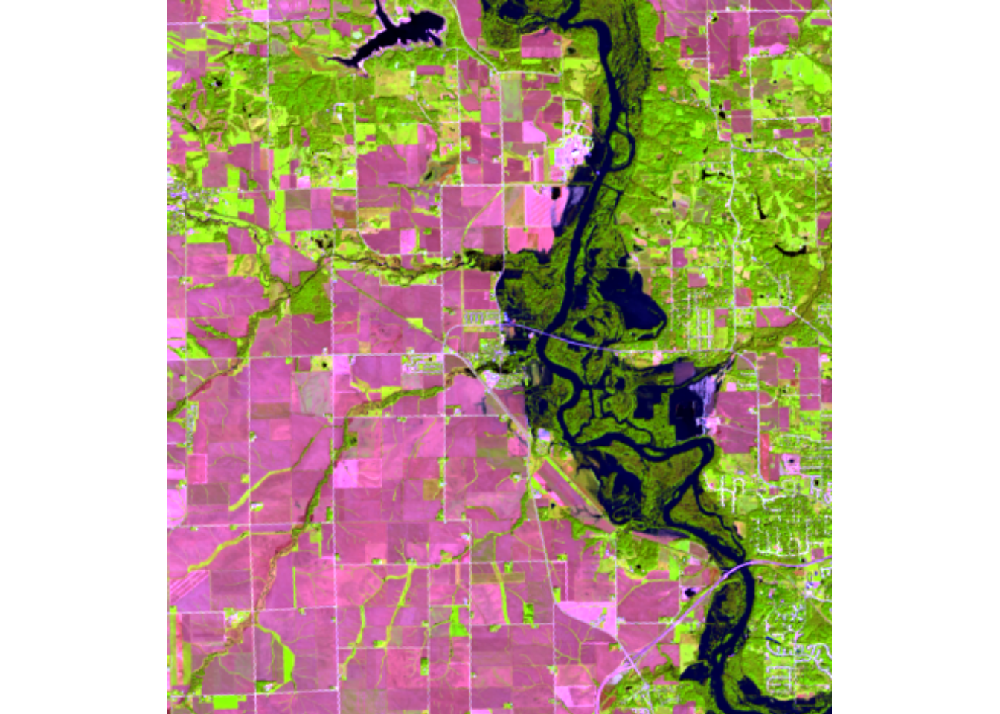
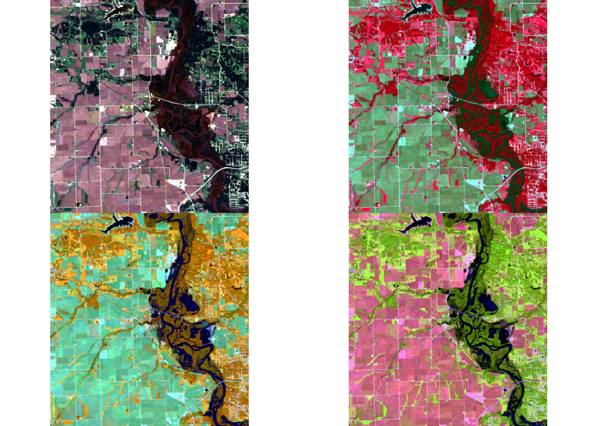
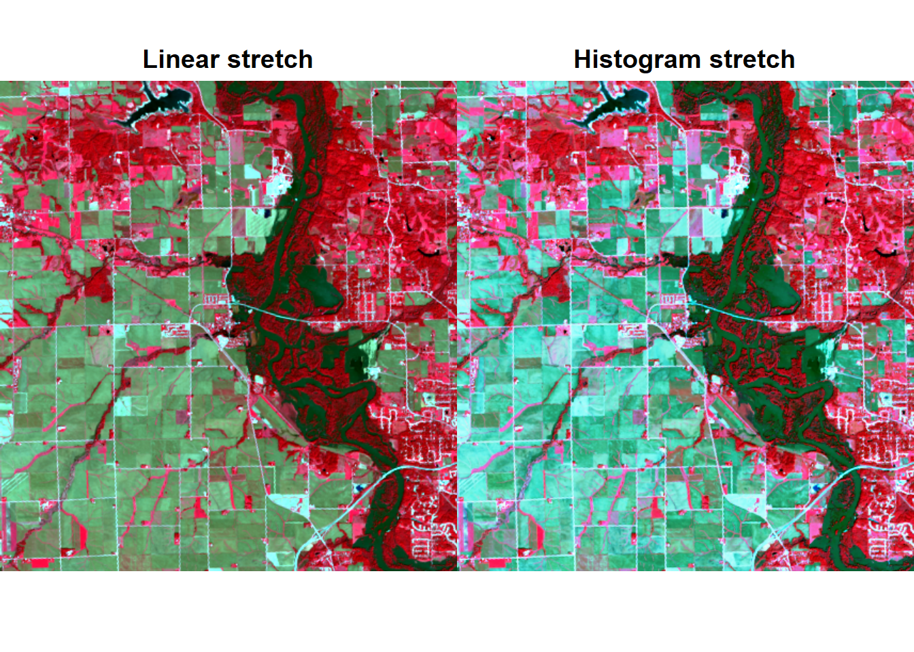
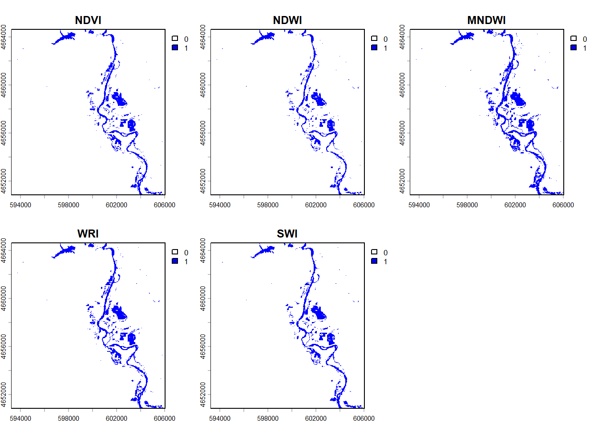

files <-list.files("data/landsat",pattern ="SR_B[1-6]\\.TIF$",recursive =TRUE,full.names =TRUE) |>sort()files # sanity check — should be six paths, B1 through B6
name authority code
1 WGS 84 / UTM zone 15N EPSG 32615
area
1 Between 96°W and 90°W, northern hemisphere between equator and 84°N, onshore and offshore. Canada - Manitoba; Nunavut; Ontario. Ecuador -Galapagos. Guatemala. Mexico. United States (USA)
extent
1 -96, -90, 0, 84
res(r)
[1] 30 30
The staked image has dimensions of 7801 rows x 7681 columns x 6 layers. The coordinate system is WGS 84/UTM zone 15N which sits in eastern Iowa. The cell size is 30m x 30m.
Step 5
# Reproject AOI to raster CRSpalo_utm <-st_transform(palo, crs(r))# buffer to capture the river corridor around Palo (~5 km)palo_buf <-st_buffer(palo_utm, 5000)# Crop the stackr_crop <-crop(r, vect(palo_buf))r_crop
#test if it workedplot(r_crop$red)plot(st_geometry(palo_utm), add =TRUE, border ="red", lwd =2)

# a few test plotsplotRGB(r_crop, r =4, g =3, b =2, stretch ="lin",main ="True color (4-3-2)")

plotRGB(r_crop, r =5, g =4, b =3, stretch ="lin",main ="Color infrared (5-4-3)")

plotRGB(r_crop, r =6, g =5, b =4, stretch ="lin",main ="False color urban (6-5-4)")

Question 2.
par(mfrow =c(2, 2))# 1. Natural color: R-G-B (4-3-2)plotRGB(r_crop, r =4, g =3, b =2, stretch ="lin",main ="Natural color (R-G-B)")# 2. Color infrared: NIR-R-G (5-4-3)plotRGB(r_crop, r =5, g =4, b =3, stretch ="lin",main ="Color infrared (NIR-R-G)")# 3. False color water focus: NIR-SWIR1-R (5-6-4)plotRGB(r_crop, r =5, g =6, b =4, stretch ="lin",main ="False color water (NIR-SWIR1-R)")# 4. Your choice — agriculture: SWIR1-NIR-B (6-5-2)plotRGB(r_crop, r =6, g =5, b =2, stretch ="lin",main ="Agriculture (SWIR1-NIR-B)")

par(mfrow =c(1, 1))
par(mfrow =c(1, 2))plotRGB(r_crop, r =5, g =4, b =3, stretch ="lin",main ="Linear stretch")plotRGB(r_crop, r =5, g =4, b =3, stretch ="hist",main ="Histogram stretch")

par(mfrow =c(1, 1))
The RGB image is the closest to our actual vision. The rivers are visible as brown sediment laden water. The contrast between water and the soils is hard to detect. And flood delineation is really hard to see.
NIR-R-G image shows healthy vegetation with red colors because the plants reflect the NIR so strongly while absorbing water. The river channel stands out here against the red.
NIR-SWIR1-R image is really good at isolating the water since the water appears as dark blue since SWIR and NIR absorbs water. Vegetation stands out and so do the city houses. The contrast makes it a lot easier to see the flood extent.
SWIR1-NIR-B image is the agriculture one. I chose this one because of all the surrounding agriculture to Palo and the impact the ag is part of the story one might want to tell about the impacts of the flood. The SWIR band is sensitive to saturated soil so the submerged crops appear slightly darker.
The stretch comparison shows the linear stretch that has re-scaled the pixel values to the display range which not only preserves the brightness relationship but also creates a more natural looking image. The histogram stretch redistributed the pixel values to produce a more uniform intensity and makes more subtle features stand out more. But also can accentuate the noise.
“Describe the 5 images. How are they similar and where do they deviate?”
All five of the images show the same flood feature which is just the main river channel. However, for NIR and SWIR vegetation is strongly reflected which is the sharp contrast. But NDVI is a vegetation index so it isn’t meant to actual detect water specifically.
Step 2
flood_ndvi <-app(ndvi, fun =function(x) ifelse(x <0, 1, 0))flood_ndwi <-app(ndwi, fun =function(x) ifelse(x >0, 1, 0))flood_mndwi <-app(mndwi, fun =function(x) ifelse(x >0, 1, 0))flood_wri <-app(wri, fun =function(x) ifelse(x >1, 1, 0))flood_swi <-app(swi, fun =function(x) ifelse(x <5, 1, 0))
flood_stack <-c(flood_ndvi, flood_ndwi, flood_mndwi, flood_wri, flood_swi) |>setNames(c("NDVI", "NDWI", "MNDWI", "WRI", "SWI"))# Convert any NA / NaN to 0 (non-flood)flood_stack <-app(flood_stack, fun =function(x) ifelse(is.na(x), 0, x)) |>setNames(c("NDVI", "NDWI", "MNDWI", "WRI", "SWI"))
plot(flood_stack, col =c("white", "blue"))

#CHECKglobal(flood_stack, fun ="sum", na.rm =TRUE)
“Describe the differences and similarities between the different maps.”
All five maps identify the same core flooding features and the channel which is N/S. The obvious overbank flooding is around the town of Palo. They all show where the actual channel is. How they differ is in the completeness. Some produced a very thin main channel, others captures the full extent of the overbank flooding.
Question 4.
Step 1
set.seed(555)
Step 2
v <-values(r_crop)dim(v)
[1] 196880 6
v <-na.omit(v)dim(v)
[1] 196880 6
“What do the dimensions of the extracted values tell you about how the data was extracted?”
The values function returned a matrix with 196,880 rows and 6 columns which corresponds to the 6 bands. Each column has the bands reflectance values across the image. The number of rows equals the number of pixels in the cropped raster. This means that values flattened the 3D spatial structure into a 2D matrix. The spatial arrangement is now in k-means with one observation per row per column.
Warning: Quick-TRANSfer stage steps exceeded maximum (= 9844000)
Warning: Quick-TRANSfer stage steps exceeded maximum (= 9844000)
Warning: Quick-TRANSfer stage steps exceeded maximum (= 9844000)
Warning: Quick-TRANSfer stage steps exceeded maximum (= 9844000)
# The cluster assignments for each pixelhead(km$cluster)
[1] 8 8 8 8 8 8
length(km$cluster) # should equal nrow(v) = 196880
[1] 196880
Step 4
# Copy one band to use as a template (inherits extent, CRS, resolution)kmeans_raster <- r_crop$coastal# Overwrite with the cluster assignmentsvalues(kmeans_raster) <- km$clusterplot(kmeans_raster, col =rainbow(12), main ="k-means clusters (k = 12)")
The reason the cell values arent even numbers is the cell values in mapview aren’t anyways whole numbers even though agreement raster contains only integers from 0-6. The mapview doesn’t display the 30 m ratser grid full resolution and instead re-projects and resamples it. When zoomed out the 30 m pixels get averaged and those aren’t always whole numbers.